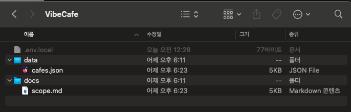

프로젝트 세팅하기
실습 폴더 세팅하기
프로젝트 루트 폴더를 만들고 시드 데이터·범위 문서·환경변수를 넣어 Scaffolding 준비를 마칩니다.
얻어갈 것
Scaffolding을 요청하기 전에 프로젝트 루트 폴더를 만들고, 그 안에 준비물(시드 데이터·범위 문서·환경변수)을 넣어 둡니다. 폴더가 준비돼 있으면 다음 챕터에서 바로 Scaffolding을 요청할 수 있습니다.
- 실습 파일(VibeCafe.zip)을 받아 프로젝트 루트에 풉니다.
.env.local에는 앞서 카카오맵 SDK 발급받기에서 발급받은 JavaScript 키를 넣습니다.
실습 파일 받기
실습 파일 · VibeCafe.zip느좋카페 시드 데이터(data/cafes.json), 구현 범위 문서(docs/scope.md), 환경변수 템플릿(.env.local)이 들어 있습니다.
⬇ 다운로드압축을 풀면 다음과 같은 구조입니다.
VibeCafe/ # 프로젝트 루트 폴더
├─ .env.local # NEXT_PUBLIC_KAKAO_MAP_KEY=여기에_발급받은_키
├─ data/
│ └─ cafes.json # 지도에 표시할 느좋카페 시드 데이터
└─ docs/
└─ scope.md # 구현 범위를 정리한 문서

폴더에 무엇이 들어 있나
data/cafes.json— 지도에 표시할 느좋카페 시드 데이터입니다.docs/scope.md— 무엇을 먼저 만들지 정리한 구현 범위 문서입니다..env.local— 카카오맵 JavaScript 키를 담는 환경변수 파일입니다.
이 폴더가 다음 챕터(Scaffolding)의 출발점입니다. 준비물을 먼저 갖춰 두면 에이전트에게 ‘이미 가진 것’을 정확히 알려줄 수 있습니다.